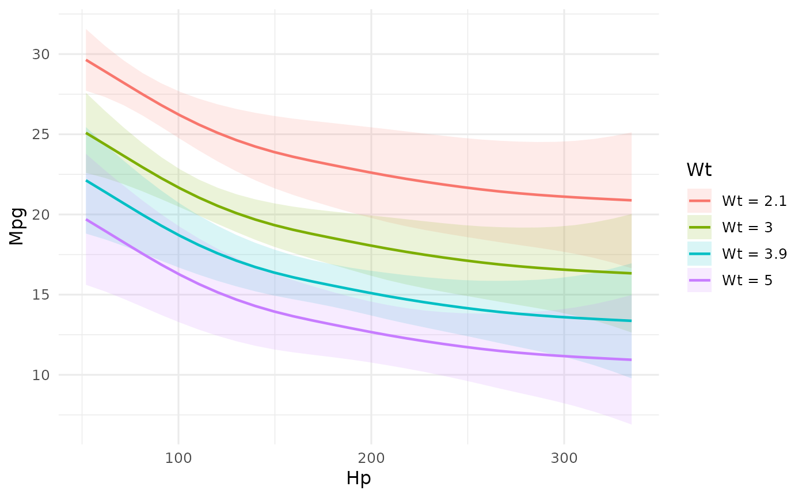

Projects the 3D surface into 2D by fixing one variable at specific values and plotting the response against the other variable. This bridges interactive 3D exploration with publication-ready 2D figures.
Usage
surf_profile(object, along = c("x", "y"), at = NULL, use_ggplot = TRUE, ...)Arguments
- object
An effectsurf object.
- along
Character. Which axis to plot along:
"x"(default) or"y"."x": fix y at specific values, plot response vs x."y": fix x at specific values, plot response vs y.
- at
Numeric vector or
NULL. Values at which to fix the other variable. IfNULL, uses 5 evenly spaced quantile values.- use_ggplot
Logical. If
TRUEandggplot2is available, returns a ggplot2 object. IfFALSE(default), returns a list of data and a base R plot.- ...
Additional arguments passed to plotting functions.
Value
If use_ggplot = TRUE, a ggplot object. Otherwise, a named list
with data (a data.table of profile slices) and plot (called for
side effect).
Examples
# \donttest{
if (requireNamespace("mgcv", quietly = TRUE)) {
model <- mgcv::gam(mpg ~ s(wt) + s(hp), data = mtcars)
es <- surf_prediction(model, x = "wt", y = "hp",
x_length = 30, y_length = 30)
# Profile along x at 5 values of y
surf_profile(es, along = "x")
# Profile along y at specific x values
surf_profile(es, along = "y", at = c(2, 3, 4, 5))
}

# }